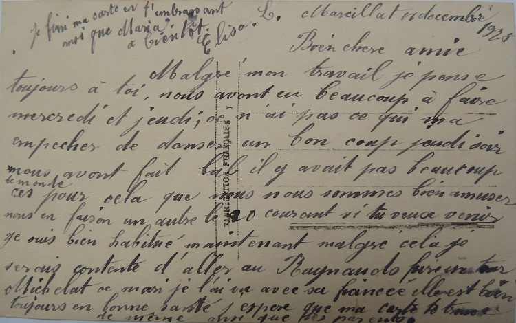

11 Novembre 1918 … l’armistice est signé en forêt de Compiègne … la guerre est finie … Marthe Chenal, Soprano de l’Opéra comique et égérie des Poilus, chante la Marseillaise, enveloppée dans le drapeau tricolore depuis le balcon de l'Opéra
Garnier en présence de Georges Clémenceau et d'une foule nombreuse …
12 Novembre 1918 … Lettre de Claude Monet à Georges Clémenceau :
« Cher et grand ami, je suis à la veille de terminer deux panneaux décoratifs, que je veux signer du jour de la victoire, et viens vous demander de les offrir à l’État par votre intermédiaire. C’est peu de chose, mais c’est la seule manière
que j’ai de prendre part à la victoire. Je désire que ces deux panneaux soient placés au musée des Arts décoratifs et serai heureux qu’ils soient choisis par vous. Je vous admire et vous embrasse de tout mon cœur »
Suite à ce premier don, Clémenceau convaincra Monet d’offrir l’ensemble décoratif des Nymphéas que l’on peut voir au Musée de l’Orangerie. Et l’histoire des Nymphéas, c’est l’histoire d’une amitié indéfectible entre un homme d’état et un
peintre de génie.
Clémenceau, le Père La Victoire, écrit ainsi à Monet : « Je vous aime parce que vous êtes vous, et que vous m’avez appris à comprendre la lumière. Vous m’avez ainsi augmenté. Tout mon regret est de ne pouvoir vous le rendre. Peignez,
peignez toujours, jusqu’à ce que la toile en crève. Mes yeux ont besoin de votre couleur et mon cœur est heureux de vous. »
Après ces années sombres de guerre, quoi de plus beau en effet pour célébrer la paix, que ces Nymphéas - symbole de cette quête incessante de la lumière par le dernier des impressionnistes.
Quand les soldats partaient aux tranchées, Monet s’attelait à l’œuvre dès 1914 et dans ces univers parallèles, les uns cotoyaient la mort et l’horreur quand le peintre saisissait calme et beauté sur sa toile.
Ce tableau des Nymphéas marque aussi la fin d’une époque et déjà les artistes plus jeunes explorent de nouvelles sensations et créent de nouveaux mouvements. Comme la fin de la Grande Guerre, il marque la véritable césure entre 19ème et 20ème
siècle et un monde nouveau s’annonce où nombre de certitudes ont été mises à bas.
Certes la vie quotidienne reprend son cours, certes les soldats survivants sont rentrés aux foyers, certes les familles les accueillent avec joie et soulagement, mais tous gardent en eux les meurtrissures de la guerre comme ces cartes et
lettres gardées au fond des tiroirs des armoires …
Comme en attestent ces quelques cartes postales, arrivent bien vite les premières célébrations de la Victoire et immédiatement après-guerre ceux de l’arrière vont visiter les villes martyres du front et les anciens champs de bataille … soit
pour se recueillir sur la tombe de leurs proches, soit pour fouler la terre et embrasser le dernier paysage entrevu par ceux qui disparurent ou n’eurent jamais de sépulture ...
Et une fois encore, on retrouve notre entreprise Auvergnate préférée, C’est en effet dès 1917 que Michelin publie son premier guide des champs de bataille, une première publication qui sera suivie par une véritable bibliothèque de guides
sur les lieux emblématiques de la Grande Guerre.
Drôle d’époque où Michelin fait la réclame des ses guides en les présentant comme un joli cadeau d'étrennes pour les enfants !...
Selon l’Historial de la Grande Guerre, c’est à partir de 1919, que des voyages sont organisés aux hauts lieux sacrés du front. Mais tout est toujours en désordre : les champs de combat étant dangereux, les cimetières et les monuments n’ayant
pas encore transformé les lieux de destruction en paisibles jardins du souvenir.
C’est à partir de la deuxième moitié des années 1920 que les visites prennent leur essor. Les familles françaises qui ont renoncé au rapatriement du corps de leur soldat tombé à la guerre ont droit à une visite gratuite annuelle.
Dans une Allemagne stabilisée, qui connaît une courte prospérité économique, on peut enfin songer à visiter l’ancien front (la traduction du guide Michelin en allemand date de 1929).
Pour les Britanniques, Australiens, et autres qui n‘ont pas eu la possibilité de rapatrier les morts – et qui n’ont su les lieux de leur disparition que par des noms exotiques – on peut enfin chercher par la visite une clôture du deuil.
Et puis, il y a toujours la fascination de cette guerre qui pour l’instant reste unique… et peut-être, à travers la lecture de ces guides, le besoin d’essayer de mieux comprendre et de vivre ce que chacun des Poilus a vécu. Ainsi, au hameau
des Raynauds, sans doute ont-ils lu le guide de la bataille de Verdun et les pages sur la bataille du MortHomme où Gabriel avait trouvé la mort.
Mais, pour l’heure, la vie reprend son cours normal au village de la Crouzille. Les hommes, revenus à la ferme n’écrivent plus beaucoup si ce n’est à leurs copains de guerre, mais les filles continuent à s’écrire entre elles sur des sujets bien
moins sérieux.
Les bals, les fêtes et les noces sont de retour … autant de sujets excitants pour Augustine et Léa qui vont maintenant sur leurs vingt ans.
… elles se sont bien amusées. On a fait le bal chez nous, enfin j’ai écouté la musique ainsi que la petite Léa. Nous avons pas pensé à dormir.
Ils ont beaucoup dansé, c’était tous des garçons amusants. Il y avait un gendarme, il était rigolo. Mais il s’est passé une petite chose.
La Cherdeville était invitée avec sa mère pour aider à la cuisine, mais comme il ne lui restait que Belot pour cavalier, elle ne l’a pas voulu et elle s’est en allé chez sa mère, laissant l’ouvrage de côté ainsi que le
déjeuner.
Tu penses si ces garçons ont été surpris de cette moquerie. Ils ne l’aimaient pas. Je t’assure qu’ils ont parlé d’elle toute la soirée.
Elle aurait voulu celui de la messe, c’est-à-dire Alfonse Peynet, mais il ne la voulait pas.
Augustine
Bien chères amies,
J’ai expédié le petit colis hier, donc je pense que vous l’avez reçu aujourd’hui.
Je ne sais pas si tu les trouveras bien ma chère Gustine mais elles sont mieux que les miennes, c’est le même prix. Comme les miennes elles valaient en réclame 8,90 mais j’ai préféré de prendre les autres pour 10.30 la
paire. C’est des bas de 11 francs et en réclame, ils les vendent 10.30.
Tu les trouveras peut-être trop chers. J’étais indécise mais j’ai préféré de prendre celles-là que les autres qui étaient pas belles.
Enfin écris moi si tu l’a reçu et si ça va.
J’ai fait bon voyage mais tous ces jours, j’avais le cafard. Dire qu’il y a 8 jours déjà que j’étais à la noce. Ça passe vite tout de même.
Mesdemoiselles,
Vous êtes invitées à venir au bal le 14 Janvier 1923 Chez Pradel à Champeaux.
Meilleures salutations
Il y a cependant encore quelques tragédies … comme en atteste ces quelques cartes, c’est maintenant la grippe espagnole qui frappe les campagnes, et quelquefois ce sont les plus jeunes qui partent les premiers.
Bien chère Léa et Augustine,
Ayant reçu ta lettre depuis plusieurs jours, je suis très contente de voir que vous allez mieux. Mais avant-hier, j’ai reçu une lettre de la Germaine me disant que la mère était bien malade.
Je pense qu’elle va mieux et que ce sera rien. Elle me disait aussi que Gustine était malade mais je pense qu’elle va mieux. Comme elle m’a parlé, la grippe fait beaucoup de mal et il y a beaucoup de malades et me disait
que le Marchamp s’en sauverait pas. Tu m’écriras de suite, le temps me dure d’avoir des nouvelles du village.
Je suis été bien triste d’apprendre la mort de la mère de la Pauline Sol et du père Maxime Berthon, C’est tout de même triste cette terrible grippe. Ici, on n’en entend plus parler. J’ai bien peur que ma mère l’attrape,
parce que elle se soignerait pas. Tu lui donneras la lettre que j’ai mis dans la tienne.
Hier je suis allé acheter avec mon frère une chemise pour lui et un faux col, il est bleu. Et je me suis acheté un corset pour moi. Il est bien solide. Il y a beaucoup d’affaires ici et moins cher que chez nous. Je
voudrais acheter quelque chose pour ma mère mais je ne sais pas quoi.
Je finis en t’embrassant et Augustine de tout cœur.
Victorine
Ma chère cousine,
Tu m’excuseras de ne pas t’avoir répondue plus tôt.
J’ai voulu attendre quelques jours espérant pouvoir te dire que tout le monde serait guéri à la maison.
Mais il n’en est pas ainsi. Ça va mieux mais pour être complètement guéris, il me semble qu’il y en aura pour longtemps.
Nous sommes heureux de vous savoir en bonne santé. Ne vous laissez pas prendre par la grippe car c’est trop long pour s’en débarrasser.
Affectueux bonjour vous tous.
Je te quitte en t’embrassant bien fort et bien des fois.
Marie
Bien chère Léa,
Ayant reçu ta lettre depuis quelques jours, je l’ai reçu avec beaucoup de plaisir. Je suis été contente de savoir que tu étais guérie. Que tout le monde aille bien chez toi.
Tout de même, il a pas de veine le Jean -Louis, cette petite si jolie. Je vois le chagrin qu’il doit avoir. Tu me diras si c’étaient des filles qui l’ont portée en terre.
Moi, tout va bien pour le moment. Je ne sais pas quand nous partirons. Peut-être dans quinze jours, je n’en sais rien. Le temps me dure de revoir le patelin et de parler un peu.
Mon frère doit être chez nous. Si tu as reçu ma lettre, en attendant qu’il parte, dis-lui de me porter des noix si ma mère en a toujours. Si il est parti, ça ne fait rien.
Aujourd’hui dimanche, je n’ai pas pu aller me promener , il faisait trop mauvais temps. Je suis été à la messe de huit heures du matin et ce soir je suis été à vêpres à la cathédrale. C’est beau à voir, ça joue bien mieux
que chez nous.
Ce matin, je suis été chercher ma robe finie. Elle me va bien, elle est toute simple mais c’est du cher. Elle m’a pris 60 francs, mais c’est vrai qu’elle a tout fourni, la soie, les boutons.
A présent, tu feras part de ma carte à ma mère. Je lui ai écrit hier et je lui ai mis une enveloppe timbrée et du papier pour faire réponse.
Je finis, n’ayant plus de place, en t’embrassant ta sœur et toi.
Victorine
Tout le monde ne reste pas à la campagne, il n’y a pas de place pour tout le monde et bien souvent les jeunes ne peuvent pas résister à l’appel de l’inconnu et préfèrent tenter leur chance en dehors du village.
Ainsi beaucoup d’amies d’Augustine et Léa quittent la Crouzille, mais la Crouzille ne les quittent jamais et elles restent en contact étroit avec les deux jumelles …
Chère Lily,
Je viens de recevoir ton aimable lettre. Je vois que tu m’as pas oubliée. De mon côté, je pense souvent à toi.
Tu me dis que tu n’as pas eu beau pour t’en aller, mais ici c’est bien la même chose. Depuis quelques jours, il fait très froid.
Tateine est aussi taquin ainsi que Marcel.
Vois petite Lily, je t’envoie cette vue – ça te rappellera l’Auvergne. Ces jeunes filles avec ces gros sabots n’ont pas l’allure parisienne.
Toute la maison t’envoie le bonjour et moi je t’envoie mes meilleurs baisers.
Ecris-moi toujours quelquefois.
Léa
… Elisa va simplement travailler au café de Marcillat, le village d’à côté …
Chère Augustine,
Je viens m’entretenir un instant avec toi, mais j’aimerais bien mieux causer de vive voix.
Je compte sur vous pour dimanche prochain. Je vais bien, j’espère que ma carte vous trouve de même.
Je suis bien habituée et très contente de ma place. Je ne m’en fait pas. Jeudi, nous avons eu beaucoup d’entrées mais je me suis faite beaucoup de pourboires, ce qui encourage. Aujourd’hui il y avait des bourgeois qui ont donné 10 francs.
Tu m’enverras le nouveau du pays, Si j’avais personne aux Raynauds, ça me ferait de la peine d’y retourner.
Bien chère amie,
Malgré mon travail, je pense toujours à toi.
Nous avons eu beaucoup à faire mercredi et jeudi. Ce n’est pas ce qui m’a empêché de danser un bon coup jeudi soir. Nous avons fait bal, il y avait pas beaucoup de monde, c’est pour cela que nous nous sommes bien amusés. Nous en ferons un autre le 20 courant, si tu veux venir.
Je suis bien habituée maintenant, malgré cela je serais contente d’aller aux Raynauds faire un tour. Michelat se marie, je l’ai vu avec sa fiancée, elle est bien belle.
Je suis toujours en bonne santé. J’espère que ma carte te trouve de même ainsi que tes parents.
Je finis en t’embrassant ainsi que Maria.
A bientôt. Elisa

Mes chères petites amies,
Nous voici bien proche de la nouvelle année.
Je vous envoie ces quelques mots pour vous faire part de la bonne année et surtout une excellente santé pour 1926 et à chacune un joli mari dans l’année.
Tu voudras bien faire part de la bonne année à toute la famille.
Recevez de votre petite amie de bons baisers. Au plaisir pour le 19.
Bien le bonjour à tous.
Elisa
… Victorine part plus loin et rejoint une famille bourgeoise de Commentry comme bonne à tout faire. Ces quelques cartes sont pleines de fraîcheur avec un brin d’effronterie comme on peut s’y attendre de la part d’une jeune fille dans ses vingt ans …
Nous sommes bien loin du quotidien de la Célestine du Journal d’une femme de chambre écris par Octave Mirbeau en 1900, mais comme Célestine, Victorine fait partie de ce contingent de jeunes paysannes employées par une bourgeoisie montante.
Si le cœur vous en dit, feuilletez donc quelques pages de ce grand classique.
Etant rentrée de promenade avec ma marraine, je suis été porter ma robe à arranger chez la couturière. Je la fais transformer en robe droite.
Les patrons sont en promenade. Je n’ai que de trois heures à sept heures, ça me fait pas beaucoup. Tu vois, il faut toujours se dépêcher, toujours courir. Ce n’est pas le rêve. Vive encore la campagne, on est bien moins fermé.
Chez nous c’était la communion, tu me diras comment ça s’est passé – ici aussi, c’était la communion. Ça fait une jolie fête.
Ecris-moi le plus souvent que tu pourras car je m’ennuie ici.
Je finis ma carte et avant, reçois de ta petite amie mille baisers.
Victorine
PS : Je pense de m’en aller pour la Pentecôte, j’attends cet heureux jour pour causer de vive voix.
Chère Augustine et aussi Léa,
Je vous écris ces deux mots dans ma chambre avant d’aller me coucher. Aujourd’hui, je me suis bien promenée. Ma cousine de Doyet était venue chez ma marraine avec sa petite. Ça fait que j’ai sorti de deux heures et demie jusqu`à six heures et que j’ai resté avec eux.
Nous sommes allés nous promener sur la route de Chamblet et nous sommes revenus par le bois. Ah, c’est un beau pays autour de Commentry.
Mais tout ça, ça ne vaut pas les Raynauds et la soirée de dimanche passée à la … Quand je suis rentrée, ce que j’avais le cafard, j’en étais malade.
J’ai voulu dire que je serais peut-être obligée de quitter si mon frère en avait longtemps pour guérir. Il a fait une jolie grimace, il ne veut pas que je les quitte. Voilà ce qu’il me dit : vous nous quitterez que quand votre amoureux viendra vous chercher. Et bien, j’aurais pas fini d’attendre.
Il m’appelle toujours petite Virlette, vous nous quitterez pas. Oui, je suis trop bonne, il me ferait battre l’eau.
… Louise, une amie de Maria, est partie à Clermont Ferrand, la capitale auvergnate. Les années passent, mais dans cette période d’après-guerre où beaucoup d’hommes sont morts au front, les maris se font rares et bien des souhaits de mariage dans l’année ne seront jamais exaucés. Il en ira ainsi pour Maria …
Bien chère Maria,
Je viens te remercier de tes bons vœux que tu m’as envoyés. Quoique un peu tard, je viens t’offrir les miens.
Quant au dernier vœu que tu me fais, je t’en souhaite autant : un joli mari au bout de l’année. Tu sais, c’est le moment de partir et débrouille toi pour que je mange cette noce.
Quant à moi, je m’en fais pas pour le moment. Je suis bien heureuse. Mon idée est de ne pas me marier. Ceux que je veux me veulent pas, et ceux qui me veulent , je ne les veux pas. Je veux rester quelque temps comme ça et puis après, mon idée est de faire une sœur. Si tu veux venir, nous partirons toutes les deux.
Tu sais, il y a chez Mr Baud une petite sœur qui garde Mr Baud qui est malade …
Ma chère amie,
Depuis que je suis ici, j’ai souvent pensé vous tous et aux bons moments passés avec toi.
J’aurais voulu t’écrire plus tôt mais ne le pouvais pas car j’étais très occupée à mon emménagement. Quoique point complet, ça ressemble un peu à un ménage et je me trouve très bien dans mon petit logis. Je ne veux pas t’en donner le détail, je préfère que tu viennes le voir.
Que puis-je te dire sur ma nouvelle résidence sinon que je suis très heureuse. Je commence à m’habituer à cette nouvelle vie. Le temps me dure pourtant de revoir les Raynauds. J’irai probablement dans le courant Février.
Qu’as-tu fait depuis mon départ ? Êtes-vous allées de nouveau aux foires ? Surtout ne vous abrutissez pas trop.
Dis à Léa et Augustine qu’elles se débrouillent à broder pour qu’elles puissent me montrer de belles choses quand je viendrai.
En attendant l’heureux plaisir de vous voir. J’adresse à tous mes affectueuses amitiés.
Bons baisers de ton amie.
Louise
Bien chères amies,
A l’occasion du nouvel an, je viens vous offrir à tous une bonne et heureuse année. Et surtout pour toi Léa ainsi que Gustine, un gentil mari comme celui-ci que je viens offrir.
Je n’ai pas pu partir pour la Noël mais je partirai dans le courant du mois de janvier. Après le 7, je serai libre. Alors nous allons parler un bon coup, car j’ai bien des choses à vous dire.
Dimanche, je suis été au cinéma. J’ai le droit d’y aller tant que je veux, je ne paye pas. C’est mon ancienne patronne qui m’a forcée …
… Victorine a finalement un chéri, et dans cette carte à Léa, on apprend que Léa a également un petit ami. C’est sans doute mon grand-père, Louis, qu’elle épousera bientôt …
Bien chère amie,
Je suis été contente de voir que tu t’es bien amusée à cette noce. Tu devais être belle avec cette jolie robe. Tu vas la prendre pour aller à Ronnet à la fête et amuse-toi bien.
Moi je ne sais pas quand je partirai pour Pionsat. J’aurai toute les peines du monde pour y aller, ma patronne voudra pas que je parte et moi je voudrais déjà être partie.
J’ai toujours des nouvelles de mon chéri. Je pense qu’il viendra me voir dimanche. Le temps me dure. Il n’est pas parti, il est toujours chez lui.
Je suis été bien contente de voir que tu avais un petit ami. La Louisette doit être contente.
Bien le bonjour chez toi.
Ton amie. Victorine.
… Et d’autres, comme Germaine, partirent encore plus loin … A la Capitale !
Ma chère Maria,
Me voilà depuis une quinzaine bien éloignée du patelin et de vous tous. Malgré cela, je ne vous oublie pas.
Je pense même souvent à vous. Je vous espère et souhaite tous en bonne santé et que ton oncle aille un peu mieux. Quant à moi, je suis en bonne santé pour le moment.
Je t’envoie une vue de l’eglise où je vais à la messe tous les dimanches à 7 heures et demie. Je ne me suis pas encore promenée dans Paris, juste dans le petit quartier que je fréquente pour faire les provisions.
Pour aujourd’hui, je te quitte en t’adressant mes amitiés ainsi qu’à Augustine et ta sœur.
Bonjour à toute la maison.
Germaine
Dans ces années d’après-guerre, la vie reprend donc peu à peu son cours normal mais sans doute on n’oublie pas cette immense meurtrissure que la guerre a laissé. Et comme face à ses monuments aux morts que toutes les communes érigent, repensons un instant à ceux et celui qui n’est jamais revenu des champs de bataille.
Comme Brel le chantera plus tard, pourquoi ont-ils tué Jaurès ?
Y-avait-il une autre voie, la guerre pouvait-elle être évitée comme le voulait Jaurès ?
Cette jolie carte postale adressée à Gabriel par les deux petites jumelles pour un 1er Avril au front illustre parfaitement le gâchis de cette guerre, les amours et les tendresses perdues.
Cher petit Gabriel,
Nous te souhaitons le reste de tes jours heureux et une bonne ….
C’est ce que nous désirons au plus vite. Ces quelques jours que tu passes avec nous ne font que nous faire envie et nous aimons beaucoup à te caresser le soir.
Tu sais bien, il te faudrait tous les jours chez nous.
Nous t’envoyons le poisson d’Avril porté par deux petites comme nous, mais pas si coquines ni si aimables.
Nous t’embrassons sur les deux joues de tout cœur.